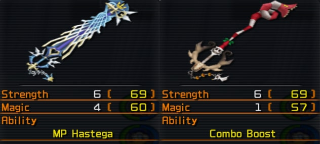

The Main Difference between the 2 Keyblades are their Abilitys:
Decisive Pumpkin has Combo Boost, which makes Ground Finishers stronger the more hits you landed during a combo.
Ultima has MP Hastega, which speeds up your MP Regeneration by 75% as soon as you used it all up.

I compared the 2 Keyblades with a normal ground combo against Data Roxas, who has - according to my research - 3168 HP.
I tested this with a Lvl.99 Sora who has 80 Strength and 64/67 Magic.
I had one Combo Boost equipped, but no Combo / Air Combo Plus.
I did a whole Combo on him, with 2 Default Hits and 2 Finishers.
First i blocked his initial attack, then: Counterguard -> Flash Step -> Guard Break -> Explosion
Roxas' HP afterwards:
Decisive Pumpkin: 2925 HP (243 Damage)
Ultima: 2957 HP (211 Damage)
A Picture for Visual Comparison:
Decisive Pumpkin did 32 More Damage than Ultima. This doesn't sound like much, but it makes the fight much quicker with Decisive Pumpkin than Ultima. Sure, Air Attacks will still do the same damage, but ground attacks are more common during later Boss Fights anyways. The 3 extra magic that Ultima barely makes a difference during a ground combo, because the only attack that does magic damage is "Explosion" (The balls that circle around you).
I also did a comparison of the Lingering Will, with 2 Combo Plus and 2 Finishing Plus abilites equipped. I did a full 4 hit ground combo with 3 Finishers, which consist of Guard Break -> Explosion -> Guard Break . The following picture shows his HP Bar of a full combo:
Decisive Pumpkin did a lot more damage than Ultima, and that with the same attacks and finishers. With this, Terra will be a short fight, but more difficult fight because of the missing MP to heal.
The only thing Ultima does better is MP Regeneration: With Decisive Pumpkin, your MP Bar needs around 22.5 seconds before you can cast spells again. Ultima needs only ~17 seconds to fully recover your MP, which is way faster than any other Keyblade. These times where measured with 2 Full Bloom+, MP Haste and MP Hastera equipped, so your times may vary.
Here a comparison between DP and Ultima:
It doesn't sound like much, but Ultima is a little bit longer than Decisive Pumpkin. It's barely visible, but it's definitely longer. This doesn't make much of a difference, but it feels better to connect earlier with your enemy when dashing in with 'Slide Dash'. It also makes Dodge Slash a little bit more viable, because now you will probably always hit the first swing. A .gif showing the difference:
Overall, Decisive Pumpkin is a better Keyblade for doing a lot of damage with physical ground combos, but Ultima is better if you prefer to take it easy and heal a lot. I prefer to use Ultima, because the extra length and magic spam makes it better for a kind-of experimental magic-spam playstyle which I have.